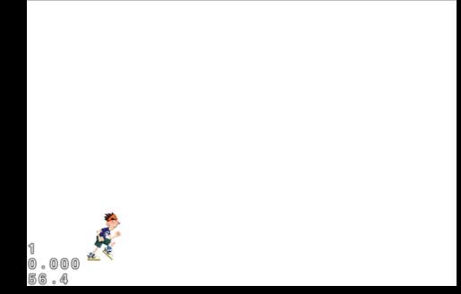
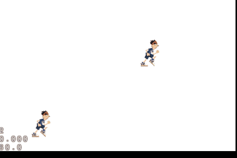
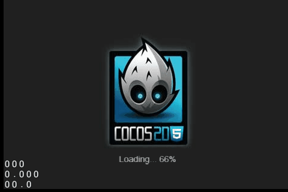

<!DOCTYPE html>
<html>
<head><meta name="generator" content="Hexo 3.8.0">
  <meta charset="utf-8">
  
  <title>Let&#39;s start Cocos2d-html5 2 : Dynamic World ! | youxiachai</title>
  <meta name="viewport" content="width=device-width, initial-scale=1, maximum-scale=1">
  <meta name="description" content="上节回顾在上一节中,我们大概了解场景, 层, 精灵 ,接下来我们重点讨论一下精灵的使用. 这次我们的项目比上一节复杂那么一点点. 本节项目目录结构 Github: https://github.com/youxiachai/Cocos2d-html5-little-book/tree/master/myDynamicWorld 1234567891011121314│   boot-html5.j">
<meta name="keywords" content="game">
<meta property="og:type" content="article">
<meta property="og:title" content="Let&#39;s start Cocos2d-html5 2 : Dynamic World !">
<meta property="og:url" content="http://blog.gfdsa.net/2014/02/09/game/startcocos2d2/index.html">
<meta property="og:site_name" content="youxiachai">
<meta property="og:description" content="上节回顾在上一节中,我们大概了解场景, 层, 精灵 ,接下来我们重点讨论一下精灵的使用. 这次我们的项目比上一节复杂那么一点点. 本节项目目录结构 Github: https://github.com/youxiachai/Cocos2d-html5-little-book/tree/master/myDynamicWorld 1234567891011121314│   boot-html5.j">
<meta property="og:locale" content="zh-CN">
<meta property="og:image" content="http://blog.gfdsa.net/2014/02/09/game/startcocos2d2/standHuman.png">
<meta property="og:image" content="http://blog.gfdsa.net/2014/02/09/game/startcocos2d2/humanmove.gif">
<meta property="og:image" content="http://blog.gfdsa.net/2014/02/09/game/startcocos2d2/humanainme.gif">
<meta property="og:updated_time" content="2019-05-11T17:21:27.303Z">
<meta name="twitter:card" content="summary">
<meta name="twitter:title" content="Let&#39;s start Cocos2d-html5 2 : Dynamic World !">
<meta name="twitter:description" content="上节回顾在上一节中,我们大概了解场景, 层, 精灵 ,接下来我们重点讨论一下精灵的使用. 这次我们的项目比上一节复杂那么一点点. 本节项目目录结构 Github: https://github.com/youxiachai/Cocos2d-html5-little-book/tree/master/myDynamicWorld 1234567891011121314│   boot-html5.j">
<meta name="twitter:image" content="http://blog.gfdsa.net/2014/02/09/game/startcocos2d2/standHuman.png">
  
    <link rel="alternative" href="/atom.xml" title="youxiachai" type="application/atom+xml">
  
  
    <link rel="icon" href="/favicon.png">
  
  <link rel="stylesheet" href="/css/style.css">
  
<!-- Google Analytics -->
<script type="text/javascript">
(function(i,s,o,g,r,a,m){i['GoogleAnalyticsObject']=r;i[r]=i[r]||function(){
(i[r].q=i[r].q||[]).push(arguments)},i[r].l=1*new Date();a=s.createElement(o),
m=s.getElementsByTagName(o)[0];a.async=1;a.src=g;m.parentNode.insertBefore(a,m)
})(window,document,'script','//www.google-analytics.com/analytics.js','ga');

ga('create', 'UA-31013178-1', 'auto');
ga('send', 'pageview');

</script>
<!-- End Google Analytics -->


   
<script>
var _hmt = _hmt || [];
(function() {
  var hm = document.createElement("script");
  hm.src = "//hm.baidu.com/hm.js?75f5de70aa60d9d2b194636cd8b7b621";
  var s = document.getElementsByTagName("script")[0]; 
  s.parentNode.insertBefore(hm, s);
})();
</script>

  <script src="http://libs.baidu.com/jquery/1.9.0/jquery.js"></script>
</head></html>
<body>
  <div id="container">
    <div class="left-col">
    <div class="overlay"></div>
<div class="intrude-less">
	<header id="header" class="inner">
		<div class="profilepic">
			
		</div>

		<hgroup>
		  <h1 class="header-author"><a href="/">youxiachai</a></h1>
		</hgroup>

		
		<p class="header-subtitle">一个在IT业界打杂的程序猿</p>
		

		
			<div class="switch-btn">
				<div class="icon">
					<div class="icon-ctn">
						<div class="icon-wrap icon-house" data-idx="0">
							<div class="birdhouse"></div>
							<div class="birdhouse_holes"></div>
						</div>
						<div class="icon-wrap icon-ribbon hide" data-idx="1">
							<div class="ribbon"></div>
						</div>
						
						
						<div class="icon-wrap icon-me hide" data-idx="3">
							<div class="user"></div>
							<div class="shoulder"></div>
						</div>
						
					</div>
					
				</div>
				<div class="tips-box hide">
					<div class="tips-arrow"></div>
					<ul class="tips-inner">
						<li>菜单</li>
						<li>标签</li>
						
						
						<li>关于我</li>
						
					</ul>
				</div>
			</div>
		

		<div class="switch-area">
			<div class="switch-wrap">
				<section class="switch-part switch-part1">
					<nav class="header-menu">
						<ul>
						
							<li><a href="/">主页</a></li>
				        
							<li><a href="/archives">所有文章</a></li>
				        
						</ul>
					</nav>
					<nav class="header-nav">
						<div class="social">
							
								<a class="github" target="_blank" href="https://github.com/youxiachai" title="github">github</a>
					        
								<a class="weibo" target="_blank" href="http://weibo.com/youxiachai/" title="weibo">weibo</a>
					        
								<a class="facebook" target="_blank" href="https://www.facebook.com/youxilua" title="facebook">facebook</a>
					        
								<a class="google" target="_blank" href="https://plus.google.com/u/0/+%E4%B8%8E%E9%82%BB%E5%BA%84/about/op/svuwn" title="google">google</a>
					        
								<a class="twitter" target="_blank" href="https://twitter.com/Tom_achai" title="twitter">twitter</a>
					        
						</div>
					</nav>
				</section>
				
				
				<section class="switch-part switch-part2">
					<div class="widget tagcloud">
						<a href="/tags/MQTT/" style="font-size: 10px;">MQTT</a> <a href="/tags/android/" style="font-size: 18.57px;">android</a> <a href="/tags/angular/" style="font-size: 10px;">angular</a> <a href="/tags/appframework/" style="font-size: 10px;">appframework</a> <a href="/tags/docker/" style="font-size: 10px;">docker</a> <a href="/tags/game/" style="font-size: 11.43px;">game</a> <a href="/tags/hexo/" style="font-size: 11.43px;">hexo</a> <a href="/tags/html5/" style="font-size: 11.43px;">html5</a> <a href="/tags/http/" style="font-size: 10px;">http</a> <a href="/tags/iOS/" style="font-size: 12.86px;">iOS</a> <a href="/tags/java/" style="font-size: 10px;">java</a> <a href="/tags/kindle/" style="font-size: 10px;">kindle</a> <a href="/tags/kotlin/" style="font-size: 10px;">kotlin</a> <a href="/tags/life/" style="font-size: 11.43px;">life</a> <a href="/tags/mac/" style="font-size: 10px;">mac</a> <a href="/tags/math/" style="font-size: 10px;">math</a> <a href="/tags/node/" style="font-size: 20px;">node</a> <a href="/tags/nodejs/" style="font-size: 10px;">nodejs</a> <a href="/tags/phonegap/" style="font-size: 10px;">phonegap</a> <a href="/tags/pi/" style="font-size: 10px;">pi</a> <a href="/tags/pomelo/" style="font-size: 15.71px;">pomelo</a> <a href="/tags/sequelize/" style="font-size: 10px;">sequelize</a> <a href="/tags/summary/" style="font-size: 14.29px;">summary</a> <a href="/tags/unity3d/" style="font-size: 12.86px;">unity3d</a> <a href="/tags/weekly/" style="font-size: 17.14px;">weekly</a> <a href="/tags/社科人文/" style="font-size: 10px;">社科人文</a>
					</div>
				</section>
				
				
				

				
				
				<section class="switch-part switch-part3">
				
					我是谁，我从哪里来，我到哪里去？我就是我，是颜色不一样的吃货…
				</section>
				
			</div>
		</div>
	</header>				
</div>
    </div>
    <div class="mid-col">
      <nav id="mobile-nav">
  	<div class="overlay"></div>
	<div class="intrude-less">
		<header id="header" class="inner">
			<div class="profilepic">
				
			</div>

			<hgroup>
			  <h1 class="header-author"><a href="/">youxiachai</a></h1>
			</hgroup>
			
			<p class="header-subtitle">一个在IT业界打杂的程序猿</p>
			
			<nav class="header-menu">
				<ul>
				
					<li><a href="/">主页</a></li>
		        
					<li><a href="/archives">所有文章</a></li>
		        
		        <div class="clearfix"></div>
				</ul>
			</nav>
			<nav class="header-nav">
				<div class="social">
					
						<a class="github" target="_blank" href="https://github.com/youxiachai" title="github">github</a>
			        
						<a class="weibo" target="_blank" href="http://weibo.com/youxiachai/" title="weibo">weibo</a>
			        
						<a class="facebook" target="_blank" href="https://www.facebook.com/youxilua" title="facebook">facebook</a>
			        
						<a class="google" target="_blank" href="https://plus.google.com/u/0/+%E4%B8%8E%E9%82%BB%E5%BA%84/about/op/svuwn" title="google">google</a>
			        
						<a class="twitter" target="_blank" href="https://twitter.com/Tom_achai" title="twitter">twitter</a>
			        
				</div>
			</nav>
		</header>				
	</div>
</nav>
      <article id="post-game/startcocos2d2" class="article article-type-post" itemscope itemprop="blogPost">
  
    <div class="article-meta">
      <a href="/2014/02/09/game/startcocos2d2/" class="article-date">
  	<time datetime="2014-02-08T16:00:00.000Z" itemprop="datePublished">2月 9 2014</time>
</a>
      
      
  <ul class="article-tag-list"><li class="article-tag-list-item"><a class="article-tag-list-link" href="/tags/game/">game</a></li></ul>

    </div>
  
  <div class="article-inner">
    
      <input type="hidden" class="isFancy">
    
    
      <header class="article-header">
        
  
    <h1 class="article-title" itemprop="name">
      Let&#39;s start Cocos2d-html5 2 : Dynamic World !
    </h1>
  

      </header>
    
    <div class="article-entry" itemprop="articleBody">
      
        <h2 id="上节回顾"><a href="#上节回顾" class="headerlink" title="上节回顾"></a>上节回顾</h2><p>在上一节中,我们大概了解场景, 层, 精灵 ,接下来我们重点讨论一下精灵的使用.</p>
<p>这次我们的项目比上一节复杂那么一点点.</p>
<p>本节项目目录结构</p>
<p>Github: <a href="https://github.com/youxiachai/Cocos2d-html5-little-book/tree/master/myDynamicWorld" target="_blank" rel="noopener">https://github.com/youxiachai/Cocos2d-html5-little-book/tree/master/myDynamicWorld</a></p>
<figure class="highlight bash"><table><tr><td class="gutter"><pre><span class="line">1</span><br><span class="line">2</span><br><span class="line">3</span><br><span class="line">4</span><br><span class="line">5</span><br><span class="line">6</span><br><span class="line">7</span><br><span class="line">8</span><br><span class="line">9</span><br><span class="line">10</span><br><span class="line">11</span><br><span class="line">12</span><br><span class="line">13</span><br><span class="line">14</span><br></pre></td><td class="code"><pre><span class="line">│   boot-html5.js</span><br><span class="line">│   index.html</span><br><span class="line">│   main.js</span><br><span class="line">│</span><br><span class="line">├───res</span><br><span class="line">│       runner.png</span><br><span class="line">│       running.plist</span><br><span class="line">│       running.png</span><br><span class="line">│</span><br><span class="line">└───src</span><br><span class="line">        DynamicWorldScence.js</span><br><span class="line">        resource.js</span><br><span class="line">        StandHumanLayer.js</span><br><span class="line">        WorldElement.js</span><br></pre></td></tr></table></figure>
<a id="more"></a>
<h2 id="女娲造人"><a href="#女娲造人" class="headerlink" title="女娲造人"></a>女娲造人</h2><h3 id="泥人材料"><a href="#泥人材料" class="headerlink" title="泥人材料"></a>泥人材料</h3><p>女娲要造人,材料当然不可或缺了, 在<code>cocos2d-html5</code> 里头,我们一般会约定把图片素材放到项目的<code>res</code> 目录下,接下来用吗手工定义一个用于处理资源文件的js,方便我们用于访问.</p>
<figure class="highlight js"><table><tr><td class="gutter"><pre><span class="line">1</span><br><span class="line">2</span><br><span class="line">3</span><br><span class="line">4</span><br><span class="line">5</span><br><span class="line">6</span><br><span class="line">7</span><br><span class="line">8</span><br><span class="line">9</span><br><span class="line">10</span><br><span class="line">11</span><br><span class="line">12</span><br><span class="line">13</span><br></pre></td><td class="code"><pre><span class="line"><span class="keyword">var</span> ImgRes = ImgRes || &#123;&#125;,</span><br><span class="line">    g_resources = [];</span><br><span class="line"></span><br><span class="line">ImgRes.s_runner_png = <span class="string">"runner.png"</span>;</span><br><span class="line">ImgRes.s_running_png = <span class="string">"running.png"</span>;</span><br><span class="line">ImgRes.s_running_plist = <span class="string">"running.plist"</span>;</span><br><span class="line"></span><br><span class="line"><span class="comment">//把需要预加载的资源路径添加进来</span></span><br><span class="line"><span class="built_in">Object</span>.keys(ImgRes).forEach(<span class="function"><span class="keyword">function</span> (<span class="params">item</span>)</span>&#123;</span><br><span class="line">    g_resources.push(&#123;</span><br><span class="line">        src : ImgRes[item]</span><br><span class="line">    &#125;)</span><br><span class="line">&#125;)</span><br></pre></td></tr></table></figure>
<blockquote>
<p>有人可能会想,一个个写好的蛋疼啊..有没有自动搞定的方式? 答案是肯定有了! 不过这个不在本节讨论范围内,初学,还是老老实实一个个手动添加资源吧.</p>
</blockquote>
<p>这里的资源路径不应该是 <code>res/runner.png</code> 吗? 为什么写成了 <code>runner.png</code> 是不是搞错了什么呀.这是故意这么写的.</p>
<p>接下来,我们要对上一节的<code>main.js</code> 进行一点小改动</p>
<p>将<br><figure class="highlight js"><table><tr><td class="gutter"><pre><span class="line">1</span><br></pre></td><td class="code"><pre><span class="line">director.runWithScene(<span class="keyword">new</span> <span class="keyword">this</span>.startScene());</span><br></pre></td></tr></table></figure></p>
<p>替换成</p>
<figure class="highlight js"><table><tr><td class="gutter"><pre><span class="line">1</span><br><span class="line">2</span><br><span class="line">3</span><br><span class="line">4</span><br><span class="line">5</span><br><span class="line">6</span><br><span class="line">7</span><br></pre></td><td class="code"><pre><span class="line"></span><br><span class="line"><span class="comment">// 定义搜索资源的目录, 这里我们约定了res. 这样对于res 目录下的资源我们之间写名字即可.</span></span><br><span class="line">cc.FileUtils.getInstance().setSearchPaths([].concat(<span class="string">"res"</span>));</span><br><span class="line"></span><br><span class="line">cc.LoaderScene.preload(g_resources, <span class="function"><span class="keyword">function</span> (<span class="params"></span>) </span>&#123;</span><br><span class="line">            director.replaceScene(<span class="keyword">new</span> <span class="keyword">this</span>.startScene());</span><br><span class="line">&#125;, <span class="keyword">this</span>);</span><br></pre></td></tr></table></figure>
<p>因为我们这里有图片素材,当然需要与加载到缓存里面,<code>cocos2d-html5</code> 的预加载api 非常贴心,只需要使用 <code>cc.LoaderScene.preload</code> api 即可,而<code>g_resource</code> 就是我们之前定义好的资源数组.</p>
<p>这样我们的要准备造泥人的材料就准备好了, 接下来开始造人!</p>
<p><strong>注意对于新增的js文件,千万不要忘记了在<code>boot-html5.js</code> 配置定义<code>appFiles</code> 数组 里头添加新增js文件路径.</strong></p>
<h3 id="造人"><a href="#造人" class="headerlink" title="造人"></a>造人</h3><p>作为<code>cocos2d-html5</code> 的女娲,要造一个人非常简单.</p>
<figure class="highlight js"><table><tr><td class="gutter"><pre><span class="line">1</span><br><span class="line">2</span><br><span class="line">3</span><br><span class="line">4</span><br><span class="line">5</span><br><span class="line">6</span><br><span class="line">7</span><br><span class="line">8</span><br><span class="line">9</span><br><span class="line">10</span><br><span class="line">11</span><br><span class="line">12</span><br><span class="line">13</span><br><span class="line">14</span><br><span class="line">15</span><br><span class="line">16</span><br><span class="line">17</span><br></pre></td><td class="code"><pre><span class="line"><span class="keyword">var</span> StandHumanLayer = cc.Layer.extend(&#123;</span><br><span class="line"></span><br><span class="line">  ctor: <span class="function"><span class="keyword">function</span> (<span class="params">path</span>) </span>&#123;</span><br><span class="line">        <span class="keyword">this</span>._super();</span><br><span class="line">        <span class="keyword">var</span> humanSprite = cc.Sprite.create(path);</span><br><span class="line">        <span class="comment">//定义我们的人出现的坐标点.</span></span><br><span class="line">        <span class="comment">//值得注意的是在cocos2d-html5 的世界,坐标用的是右手坐标系,起始点在左下,而不是一般的左上.</span></span><br><span class="line">        humanSprite.setPosition(cc.p(<span class="number">80</span>, <span class="number">57</span>));</span><br><span class="line"></span><br><span class="line">        <span class="keyword">this</span>.addChild(humanSprite);</span><br><span class="line">  &#125;</span><br><span class="line">&#125;);</span><br><span class="line"></span><br><span class="line"><span class="comment">//---------DynamicWorldScence.js</span></span><br><span class="line"><span class="comment">// 在我们的世界场景里`onEnter` 函数里添加</span></span><br><span class="line"></span><br><span class="line"> <span class="keyword">this</span>.addChild(<span class="keyword">new</span> StandHumanLayer(ImgRes.s_runner_png));</span><br></pre></td></tr></table></figure>
<p>然后,我们世界第一个人就出来了!</p>
<p></p>
<p>接下来我们的人怎么移动动起来呢?</p>
<p>这里涉及到了</p>
<blockquote>
<p><a href="http://www.cocos2d-x.org/wiki/Actions" target="_blank" rel="noopener">Cocos2d-x 的Action 机制</a></p>
</blockquote>
<p>默认的基本动作提供了5种</p>
<ul>
<li>Position</li>
<li>Scale</li>
<li>Rotation</li>
<li>Visibility</li>
<li>Opacity</li>
<li>Color</li>
</ul>
<p>以平移为例</p>
<figure class="highlight js"><table><tr><td class="gutter"><pre><span class="line">1</span><br><span class="line">2</span><br><span class="line">3</span><br><span class="line">4</span><br><span class="line">5</span><br><span class="line">6</span><br><span class="line">7</span><br><span class="line">8</span><br><span class="line">9</span><br><span class="line">10</span><br><span class="line">11</span><br><span class="line">12</span><br></pre></td><td class="code"><pre><span class="line"></span><br><span class="line"><span class="comment">//让我们在StandHumanLayer.js 的ctor 函数里头再造一个会动的人吧</span></span><br><span class="line"></span><br><span class="line"><span class="keyword">var</span> humanSprite2 = cc.Sprite.create(path);</span><br><span class="line"></span><br><span class="line">humanSprite2.setPosition(cc.p(<span class="number">80</span>, <span class="number">200</span>));</span><br><span class="line"><span class="comment">//在2s 内 X 轴从80 到 300</span></span><br><span class="line"><span class="keyword">var</span> actionTo = cc.MoveTo.create(<span class="number">2</span>, cc.p(<span class="number">300</span>, <span class="number">200</span>));</span><br><span class="line"></span><br><span class="line">humanSprite2.runAction(cc.Sequence.create(actionTo));</span><br><span class="line"></span><br><span class="line"><span class="keyword">this</span>.addChild(humanSprite2);</span><br></pre></td></tr></table></figure>
<p></p>
<h3 id="活起来"><a href="#活起来" class="headerlink" title="活起来!"></a>活起来!</h3><p>上一小节我们终于把人造好了,也能控制这人怎么移动,不过都是僵硬的,接下来,我们把人造得有人气!</p>
<p>这里涉及到了</p>
<blockquote>
<p><a href="http://www.cocos2d-x.org/wiki/Animations" target="_blank" rel="noopener">cocos2d-x Animations 机制</a></p>
</blockquote>
<p><code>cocos2d-html5</code> 支持3类动画</p>
<ul>
<li>Frame Animation</li>
<li>Sprite Sheet Animation</li>
<li>Skeleton Animation</li>
</ul>
<p>这节里头我们用的是<code>Sprite Sheet Animation</code>.</p>
<blockquote>
<p>本节的plist 的创建请阅读 <a href="https://github.com/cocos2d/cocos-docs/blob/master/tutorial/parkour-game-with-javascript/chapter5/en.md" target="_blank" rel="noopener">https://github.com/cocos2d/cocos-docs/blob/master/tutorial/parkour-game-with-javascript/chapter5/en.md</a> 这里有教你怎么用TexturePackerGUI.</p>
</blockquote>
<p>经过一番努力,终于从TexturePackerGUI 把我们的活人表造出来了,接下来就是用起来了.</p>
<p>最终完成的代码:</p>
<figure class="highlight js"><table><tr><td class="gutter"><pre><span class="line">1</span><br><span class="line">2</span><br><span class="line">3</span><br><span class="line">4</span><br><span class="line">5</span><br><span class="line">6</span><br><span class="line">7</span><br><span class="line">8</span><br><span class="line">9</span><br><span class="line">10</span><br><span class="line">11</span><br><span class="line">12</span><br><span class="line">13</span><br><span class="line">14</span><br><span class="line">15</span><br><span class="line">16</span><br><span class="line">17</span><br><span class="line">18</span><br><span class="line">19</span><br><span class="line">20</span><br><span class="line">21</span><br><span class="line">22</span><br><span class="line">23</span><br><span class="line">24</span><br><span class="line">25</span><br><span class="line">26</span><br><span class="line">27</span><br><span class="line">28</span><br><span class="line">29</span><br><span class="line">30</span><br><span class="line">31</span><br><span class="line">32</span><br><span class="line">33</span><br><span class="line">34</span><br><span class="line">35</span><br><span class="line">36</span><br><span class="line">37</span><br><span class="line">38</span><br><span class="line">39</span><br><span class="line">40</span><br><span class="line">41</span><br><span class="line">42</span><br><span class="line">43</span><br><span class="line">44</span><br><span class="line">45</span><br><span class="line">46</span><br><span class="line">47</span><br><span class="line">48</span><br><span class="line">49</span><br><span class="line">50</span><br><span class="line">51</span><br><span class="line">52</span><br><span class="line">53</span><br><span class="line">54</span><br><span class="line">55</span><br></pre></td><td class="code"><pre><span class="line"><span class="comment">// 扩展StandHumanLayer.js 的构造函数,传入精灵表信息</span></span><br><span class="line"><span class="keyword">var</span> StandHumanLayer = cc.Layer.extend(&#123;</span><br><span class="line"></span><br><span class="line">    ctor: <span class="function"><span class="keyword">function</span> (<span class="params">path,origin, originlist</span>) </span>&#123;</span><br><span class="line">        <span class="keyword">this</span>._super();</span><br><span class="line"></span><br><span class="line"></span><br><span class="line">        <span class="comment">// 1  静态</span></span><br><span class="line">        <span class="keyword">var</span> humanSprite = cc.Sprite.create(path);</span><br><span class="line">        humanSprite.setPosition(cc.p(<span class="number">80</span>, <span class="number">57</span>));</span><br><span class="line"></span><br><span class="line">        <span class="keyword">this</span>.addChild(humanSprite);</span><br><span class="line"></span><br><span class="line"></span><br><span class="line">        <span class="comment">//2  移动</span></span><br><span class="line">        <span class="keyword">var</span> humanSprite2 = cc.Sprite.create(path);</span><br><span class="line">        humanSprite2.setPosition(cc.p(<span class="number">80</span>, <span class="number">200</span>));</span><br><span class="line">        <span class="keyword">var</span> actionTo = cc.MoveTo.create(<span class="number">2</span>, cc.p(<span class="number">300</span>, <span class="number">200</span>));</span><br><span class="line">        humanSprite2.runAction(cc.Sequence.create(actionTo));</span><br><span class="line">        <span class="keyword">this</span>.addChild(humanSprite2);</span><br><span class="line"></span><br><span class="line">        <span class="comment">//3 会动的人</span></span><br><span class="line"></span><br><span class="line">        <span class="keyword">this</span>.anime(origin, originlist)</span><br><span class="line"></span><br><span class="line">    &#125;,</span><br><span class="line">    anime : <span class="function"><span class="keyword">function</span> (<span class="params">origin, originlist</span>) </span>&#123;</span><br><span class="line">        <span class="comment">// 1 读取我们预加载的精灵表</span></span><br><span class="line">        cc.SpriteFrameCache.getInstance().addSpriteFrames(originlist);</span><br><span class="line">        <span class="comment">// 1.1 使用 SpriteBatchNode 获得更好的性能</span></span><br><span class="line">        <span class="keyword">var</span> spriteSheet = cc.SpriteBatchNode.create(origin);</span><br><span class="line">        <span class="keyword">this</span>.addChild(spriteSheet);</span><br><span class="line"></span><br><span class="line">        <span class="comment">// 2 把精灵表里的每帧动作加载到数组里面</span></span><br><span class="line">        <span class="keyword">var</span> animFrames = [];</span><br><span class="line">        <span class="keyword">for</span> (<span class="keyword">var</span> i = <span class="number">0</span>; i &lt; <span class="number">8</span>; i++) &#123;</span><br><span class="line">            <span class="keyword">var</span> str = <span class="string">"runner"</span> + i + <span class="string">".png"</span>;</span><br><span class="line">            <span class="keyword">var</span> frame = cc.SpriteFrameCache.getInstance().getSpriteFrame(str);</span><br><span class="line">            animFrames.push(frame);</span><br><span class="line">        &#125;</span><br><span class="line"></span><br><span class="line">        <span class="comment">// 3 使用我们上头定义好的数组,创建动画, 第二参数,为每帧间隔时间</span></span><br><span class="line">        <span class="keyword">var</span> animation = cc.Animation.create(animFrames, <span class="number">0.1</span>);</span><br><span class="line">        <span class="keyword">var</span> runningAction = cc.RepeatForever.create(cc.Animate.create(animation));</span><br><span class="line"></span><br><span class="line">        <span class="comment">// 4 从我们精灵表里头取第一帧作为精灵</span></span><br><span class="line">        <span class="keyword">var</span> sprite = cc.Sprite.createWithSpriteFrameName(<span class="string">"runner0.png"</span>);</span><br><span class="line">            sprite.setPosition(cc.p(<span class="number">80</span>, <span class="number">280</span>));</span><br><span class="line">            sprite.runAction(runningAction);</span><br><span class="line"></span><br><span class="line">        <span class="comment">// 4.1 最后把我们的第一帧精灵加入到精灵表里.</span></span><br><span class="line">       spriteSheet.addChild(sprite);</span><br><span class="line">    &#125;</span><br><span class="line"></span><br><span class="line">&#125;)</span><br></pre></td></tr></table></figure>
<p>最终效果</p>
<p></p>
<h2 id="来源声明"><a href="#来源声明" class="headerlink" title="来源声明"></a>来源声明</h2><p>图片资源来至于跑酷教程 <a href="https://github.com/cocos2d/cocos-docs/tree/master/tutorial/parkour-game-with-javascript" target="_blank" rel="noopener">https://github.com/cocos2d/cocos-docs/tree/master/tutorial/parkour-game-with-javascript</a></p>

      
    </div>
  </div>
  
    
<nav id="article-nav">
  
    <a href="/2014/03/05/html5/phonegapandwebapp/" id="article-nav-newer" class="article-nav-link-wrap">
      <strong class="article-nav-caption">&lt;</strong>
      <div class="article-nav-title">
        
          从零构建webapps
        
      </div>
    </a>
  
  
    <a href="/2014/02/08/game/startcocos2d/" id="article-nav-older" class="article-nav-link-wrap">
      <div class="article-nav-title">Let&#39;s start Cocos2d-html5 1 : Hello World!</div>
      <strong class="article-nav-caption">&gt;</strong>
    </a>
  
</nav>

  
</article>


<div class="share">
	<!-- JiaThis Button BEGIN -->
	<div class="jiathis_style">
		<span class="jiathis_txt">分享到：</span>
		<a class="jiathis_button_tsina"></a>
		<a class="jiathis_button_cqq"></a>
		<a class="jiathis_button_douban"></a>
		<a class="jiathis_button_weixin"></a>
		<a class="jiathis_button_tumblr"></a>
		<a href="http://www.jiathis.com/share" class="jiathis jiathis_txt jtico jtico_jiathis" target="_blank"></a>
	</div>
	<script type="text/javascript" src="http://v3.jiathis.com/code/jia.js?uid=1567310" charset="utf-8"></script>
	<!-- JiaThis Button END -->
</div>


<div class="duoshuo">
	<!-- 多说评论框 start -->
	<div class="ds-thread" data-thread-key="game/startcocos2d2" data-title="Let&#39;s start Cocos2d-html5 2 : Dynamic World !" data-url="http://blog.gfdsa.net/2014/02/09/game/startcocos2d2/"></div>
	<!-- 多说评论框 end -->
	<!-- 多说公共JS代码 start (一个网页只需插入一次) -->
	<script type="text/javascript">
	var duoshuoQuery = {short_name:"youxiachai"};
	(function() {
		var ds = document.createElement('script');
		ds.type = 'text/javascript';ds.async = true;
		ds.src = (document.location.protocol == 'https:' ? 'https:' : 'http:') + '//static.duoshuo.com/embed.js';
		ds.charset = 'UTF-8';
		(document.getElementsByTagName('head')[0] 
		 || document.getElementsByTagName('body')[0]).appendChild(ds);
	})();
	</script>
	<!-- 多说公共JS代码 end -->
</div>


      <footer id="footer">
  <div class="outer">
    <div id="footer-info">
    	<div class="footer-left">
    		&copy; 2019 youxiachai
    	</div>
      	<div class="footer-right">
      		<a href="http://hexo.io/" target="_blank">Hexo</a>  Theme <a href="https://github.com/litten/hexo-theme-yilia" target="_blank">Yilia</a> by Litten
      	</div>
    </div>
  </div>
</footer>
    </div>
    
  <link rel="stylesheet" href="/fancybox/jquery.fancybox.css">
  <script src="/fancybox/jquery.fancybox.pack.js"></script>
  <script src="/js/main.js"></script>

  </div>
</body>
</html>